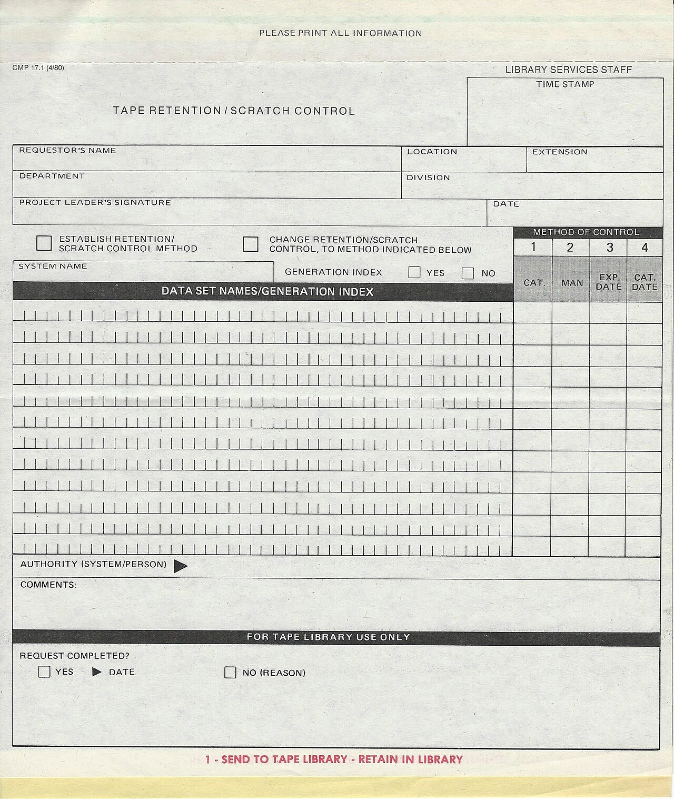
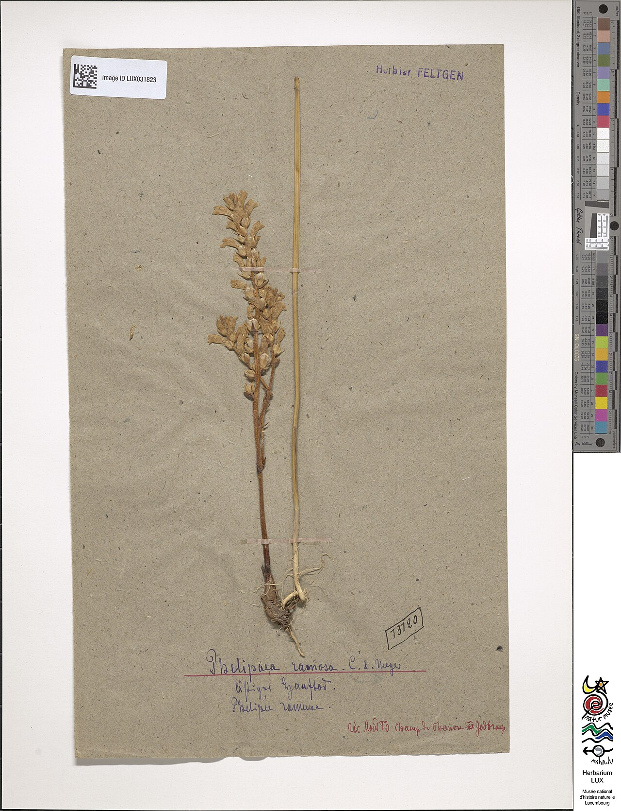
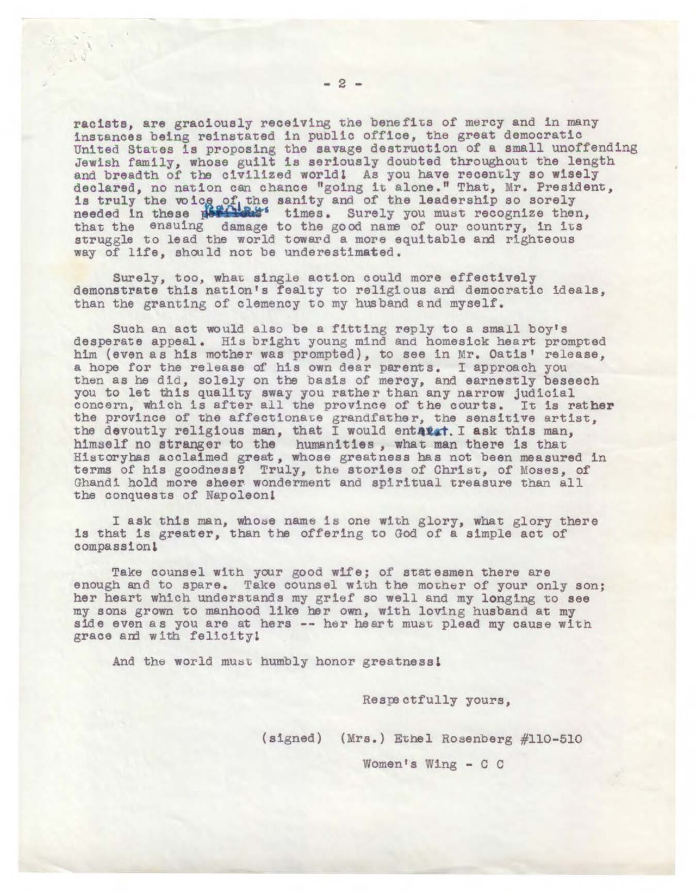

20 个抽屉与三级检索号
12 栏、基线 8px，抽屉面板高 24px。20 个抽屉分 5 行，每行 4 个，宽度取 4 / 3 / 3 / 2 栏，行与行顺序不重复，所以没有两个抽屉等宽。检索号悬挂在标签右侧 12px、比标签基线低 2px。抽屉内边距 8px，抽开后卡面留 16px，卡与卡空 1 个基线单位、行与行空 2 个。≥1440px 保留 20 个抽屉，1024–1439px 卡面窗口收窄，<1024px 单列。
第 1 行 · 抽屉 01–04 · 栏宽 4 / 3 / 3 / 2
K-01-018欧洲赤松1884 · 邱园 3 号温室 · 压制一份批注：两针一束，长约 4 cm。K-02-045欧活血丹1883 · 萨里郡路边 · 附三联单批注：第二联字迹被水洇。K-03-071药蜀葵1885 · 邱园药圃 · 根茎一段批注：蒴果椭圆，中轴明显。- 空抽屉这个抽屉是空的。1889 年迁库时标本被借走，位置照留。
第 2 行 · 抽屉 05–08 · 栏宽 3 / 4 / 2 / 3
K-05-096欧獐耳细辛1882 · 白金汉郡林下 · 带花批注：三裂叶，叶背带紫。K-06-104毛地黄1886 · 邱园 3 号温室 · 全株批注：蒴果两室，中轴贯穿。K-07-112欧洲赤松1884 · 邱园 3 号温室批注：主张句所指的 112 号卡。K-08-121香堇菜1883 · 邱园香圃 · 带根批注：托叶羽状深裂。
第 3 行 · 抽屉 09–12 · 栏宽 2 / 3 / 3 / 4
K-09-133欧洲千里光1887 · 米德尔塞克斯批注：瘦果冠毛压不住。K-10-147欧夏枯草1885 · 萨里郡草甸 · 附打字稿批注：定名意见两不一致。K-11-158羊茅1886 · 邱园草区 · 密丛一份批注：叶鞘基部紫红。K-12-113欧洲赤松（同号复份）1889 · 自第 7 抽屉迁入，改记本号批注：复份卡压痕比原卡低。
第 4 行 · 抽屉 13–16 · 栏宽 3 / 3 / 4 / 2
K-13-169欧蓍草1884 · 肯特郡路旁 · 花序两份批注：叶二回羽状全裂。K-14-176百里香1883 · 邱园岩石园 · 带花枝条批注：花萼上唇三裂。K-15-188柳叶菜1882 · 泰晤士河岸 · 株高记 1.4 m批注：蒴果四棱，种子带毛。- 空抽屉这个抽屉是空的。1889 年迁库时标本被借走，位置照留。
第 5 行 · 抽屉 17–20 · 栏宽 4 / 2 / 3 / 3
K-17-204石南1885 · 苏格兰高地 · 连土坨批注：花萼长于花冠。K-18-219欧洲蕨1884 · 萨里郡林缘 · 附副本批注：叶脉三级分支。K-19-233欧洲接骨木1886 · 邱园标本园 · 花与果批注：髓部白色，易碎。K-20-240欧洲赤杨1883 · 泰晤士河岸 · 本柜末号批注：压痕比 001 号低 12px。
抽出触发阈值是该行进入视口 25%，抽出 24px，260ms，阻尼无过冲；抽开后开口内侧出现一条 inset 单向下阴影表示柜内的暗，卡面同时上移 24px，露出压在柜沿下的那一行，离开视口后推回。整柜不吸顶。卡面横线 0.8px、外框 0.4px 画在同一条 <path> 的子路径里，所以细线不触发发丝线判定。
抽出的四张卡
索引卡三层：0.4px 蚀刻细线画外框，卡内 0.8px 的横线，横线之下是手写批注层 —— 批注用 12% 不透明度的褪色墨洗色区别于印刷文字，所以要抽出抽屉才看得到。三级检索号「柜号-抽屉号-卡号」在抽屉标签、卡面右上角、页脚检索栏三处同时出现且完全一致。
-
K-07-112欧洲赤松
Pinus sylvestris
1884 年采自邱园 3 号温室，主张句所指的就是这一号卡。平行影线间距 2px，与屏幕像素对齐以免摩尔纹。

卡面参照：Jean Feltgen 采集的 Phelipea ramosa 压制标本（照片本体是列当科，只作卡纸、标签与压制痕迹的参照）。压痕在右下 10px 处，比 001 号低 6px。 Musée national d'histoire naturelle Luxembourg · CC BY 4.0 · Wikimedia Commons -
K-02-045欧活血丹
Glechoma hederacea
1883 年采自萨里郡路边。卡后夹采集记录三联单：第一联随标本入柜、第二联寄定名者、第三联留采集人；第二联字迹被水洇过。

记录参照：三联单的复写层，与标本签上手写的采集地与时日同构。压痕在右下 14px 处，比 001 号低 2px。 Jonathan Schilling · CC BY-SA 4.0 · Wikimedia Commons -
K-10-147欧夏枯草
Prunella vulgaris
1885 年采自萨里郡草甸。卡后夹一页打字稿批注，定名意见与采集人的记录不一致，两边都没有划掉，按馆规原样留着。

批注参照：打字稿行间的铅笔批注，对应卡面上的手写批注层。压痕在右下 9px 处，比 001 号低 7px。 George Sterling、Ambrose Bierce · Public domain · Wikimedia Commons -
K-12-113欧洲赤松同号复份
Pinus sylvestris
1889 年自第 7 抽屉迁入，改记 K-12-113。检索号 K-07-113 就是从这里开始不在本柜的：原卡与复份卡共用同一份采集记录。

复份参照：同一份标本的第二张卡（卡纸深一档、标签有偏移），与原件页相同，不重复署名。压痕在右下 10px 处，比 001 号低 6px。 原件页见 assets/CREDITS.md · CC BY 4.0


检索号 K-07-113 不在本柜
检索号 K-07-113 不在本柜（错误码 CAT-404）：该卡 1889 年迁至 K-12 柜，页脚检索栏已给出跳转。
触发条件是第三段为 113 而第二段为 07：1889 年迁库时 K-07 抽屉里的 113 号卡被移入 K-12 抽屉并改号。柜体仍是 20 个抽屉、四档宽度，三段读法不变，只是第二段落到了 12。
这个抽屉是空的。1889 年迁库时标本被借走，位置照留。
空抽屉不删除、不合并：第 4 与第 16 两个空位留在柜面上，标签照旧写检索号，「借出」也是这柜档案的一部分。
错误态三条信息一个都不能少：检索号 K-07-113、错误码 CAT-404、替代落点 K-12-113。页脚检索栏与顶部状态条同时写出这三条，任何一屏截图里都读得到，不依赖点击。
六张参照图版
照片一律先灰度、再压到墨绿与卡纸两个色阶（墨绿 #4A5C3A 以 20–22% 不透明度做 multiply 叠色）；45° 平行影线由自绘 SVG 线稿承担，线宽 0.4px、影线间距 2px。禁烫金、禁金边、禁暗角，柜架色只占 24%。
-
图版一 卡片目录：宽度不等、标签按编号排列，检索路径靠编号走。 Internet Archive Book Images · No restrictions · 原件页见 assets/CREDITS.md -
图版二 压制标本卡的卡纸与标签痕迹：卡面留白处就是手写批注层的位置。 Musée national d'histoire naturelle Luxembourg · CC BY 4.0 · 原件页见 assets/CREDITS.md -
图版三 三联记录单的复写层：第一联进柜、第二联寄出、第三联留底。 Jonathan Schilling · CC BY-SA 4.0 · 原件页见 assets/CREDITS.md -
图版四 打字稿行间的铅笔批注：两种笔迹互不改写，与卡面的双层文字同构。 George Sterling、Ambrose Bierce · Public domain · 原件页见 assets/CREDITS.md -

图版五 复写副本：同一份文字的第二次落纸，对应 K-12 那张深一档的复份卡。 Dwight D. Eisenhower 总统档案 1953–1961 · Public domain · 原件页见 assets/CREDITS.md -
图版六 同号复份：同一号标本的第二张卡，两处压痕各按自己的卡号落位。 Musée national d'histoire naturelle Luxembourg · CC BY 4.0 · 原件页见 assets/CREDITS.md
检索号的三处一致
同一个检索号在抽屉标签、卡面右上角、页脚检索栏三处必须逐字相同，缺一段就翻不到东西。
| 抽屉 | 抽屉标签 | 卡面右上角 | 页脚检索栏 | 落点 |
|---|---|---|---|---|
| 第 7 抽屉 | K-07-112 | K-07-112 | K-07-112 | 抽出中，主张句所指 |
| 第 12 抽屉 | K-12-113 | K-12-113 | K-12-113 | CAT-404 的跳转目标 |
| 第 4 抽屉 | K-04 | 空位，无卡面 | K-04 | 1889 年借出，位置照留 |
| 第 16 抽屉 | K-16 | 空位，无卡面 | K-16 | 1889 年借出，位置照留 |
| 第 20 抽屉 | K-20-240 | K-20-240 | K-20-240 | 本柜末号，压痕最低 |
标签上的检索号悬挂在标签右侧 12px、比标签基线低 2px，卡面右上角那一处与它同字距，相差的只是落点。空抽屉只写「柜号-抽屉号」两段 —— 缺的第三段就是它空着的原因。
可发现性通路
把动效全部拿掉，20 个抽屉与 6 号卡仍然找得到。四条通路必须同时成立：
-
三段检索号
格式固定为「柜号-抽屉号-卡号」，柜号
K、抽屉号两位、卡号三位。任何一段写错就落到错误态，错误态同时给出错号与替代落点。 -
编号即 Tab 顺序
抽屉按
K-01-018到K-20-240升序排列，也就是键盘 Tab 的顺序；窄屏把检索号提到行首用等宽字显示。 -
不等宽是档案的痕迹
20 个抽屉取 4 / 3 / 3 / 2 栏四种宽度，同一行里出现两种宽度只有两处；两个空抽屉标签照旧写明借出与留位。这是档案被翻动过的证据，不是版式游戏。
-
抽拉与悬停的读数
悬停抽屉标签时褪色墨洗色从 12% 加深到 24%，120ms，不位移；指针进入抽屉区变成 12px 十字加 1px 方框，进入标签区变成「卡面外框」形。点击检索号会把它复制到页脚检索栏并高亮 200ms。
柜内标牌 · 检索号的三段读法：三段之间用短横连接，缺一段就翻不到东西
K柜号：本柜只有一只柜，柜号恒为 K；换成别的柜号就是另一个柜。07抽屉号：两位，01 到 20，对应柜面上 20 个不等宽抽屉的排位。112卡号：三位，001 到 240；卡面右下的 1px 压痕按卡号每 20 张右移下移 1px。
动效与降级
抽拉只改 transform 与一条 inset 阴影值，不碰布局尺寸，页面高度在整个滚动过程里不变。
- 滚动触发阈值是该行进入视口 25%，抽出 24px，260ms，缓动为阻尼无过冲；离开视口后自动推回。
- 悬停抽屉标签的褪色墨从 12% 加深到 24%，120ms，元素不位移。
- 加载柜体先出，再按行从上到下依次抽出抽屉又推回一次，每行 160ms，总 800ms，缓动为阶跃式。
- 转场从检索号跳到某张卡时，该抽屉保持抽出并把卡面推到最前，其余抽屉回到闭合，300ms。
- 光标12px 十字加 1px 方框；进入抽屉标签区后换成「卡面外框」形（26 × 18，竖边 1px）。
减少动态时的再发明（prefers-reduced-motion: reduce）：自动抽拉与加载动画取消，抽拉机制不取消 —— 抽屉默认闭合，点一下才抽出且无过渡，位移仍是 24px，卡面仍是上移 24px，开口内侧那条 inset 0 1px 0 的下阴影仍然随抽出状态出现。窄屏（<1024px）的再发明形式：开口与柜沿取消，抽屉改为可点击展开的索引卡列表，检索号提到行首用等宽字显示，Tab 顺序仍按检索号升序；复制高亮改为 100ms 不透明度变化。